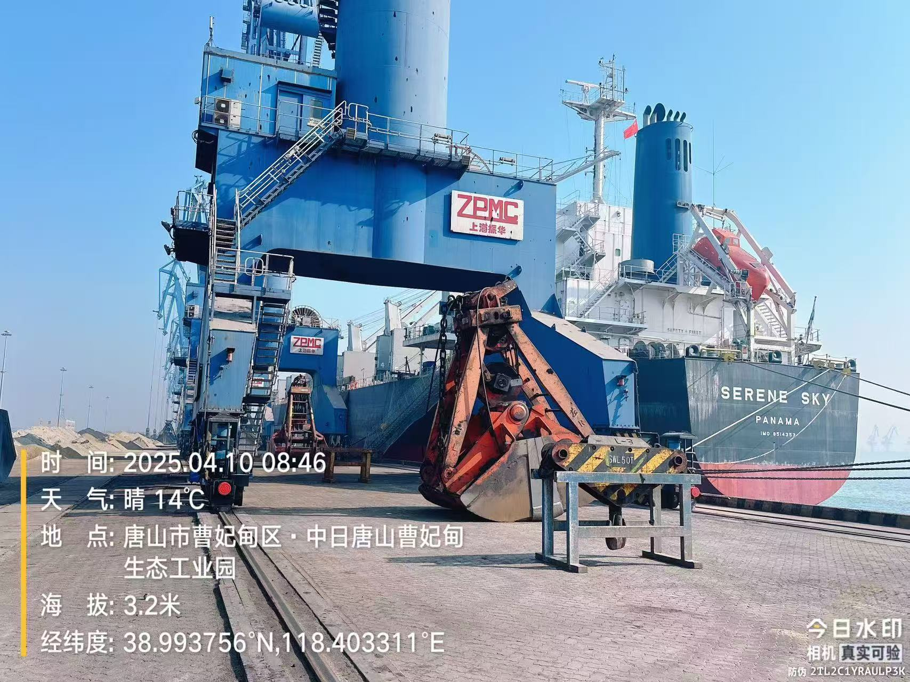
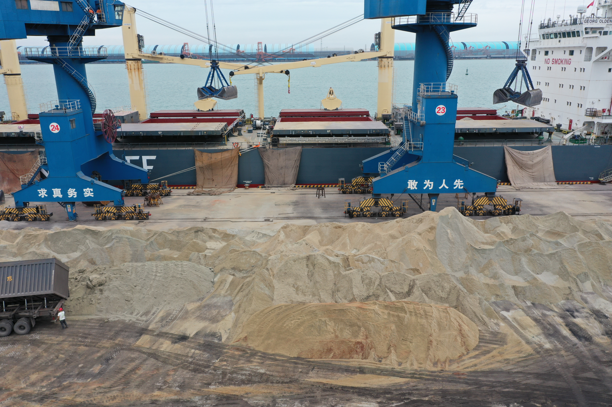
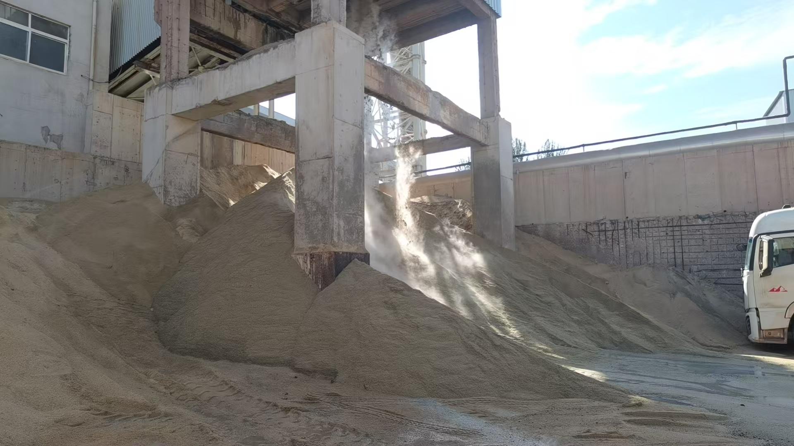

Why Broader Cement, Clinker and SCM Price Coverage Matters for Trade
Recent expansion in market coverage for cement, clinker, GBFS and related freight signals a more transparent trading environment, with direct implications for pricing logic, sourcing discipline and low-carbon material positioning.
为什么更广的水泥 熟料与 SCM 价格覆盖对贸易越来越重要
近期围绕水泥 熟料 GBFS 及相关海运价格评估覆盖的扩大，释放出一个更透明的贸易信号，并正在直接影响报价逻辑 采购纪律与低碳材料定位。

A notable recent market signal is the expansion of formal price coverage around cement, clinker, granulated blast furnace slag and related freight. For exporters, importers and industrial buyers, this matters because broader price visibility usually appears when a market is becoming more commercially structured, more closely watched and more relevant to cross-border decision-making.
1. Price transparency is becoming part of the trade infrastructure
When reporting and assessment coverage expands, the signal is not only informational. It also changes how the market communicates value. Sellers gain more reference points, buyers gain more comparison tools and both sides become more sensitive to quality, destination, logistics and carbon positioning rather than relying only on broad headline numbers.

2. Freight, destination and material identity are becoming harder to separate
For products such as clinker, GBFS and other supplementary cementitious materials, transaction logic is rarely about material alone. Freight conditions, discharge geography, handling method and supply consistency all shape the final tradable value. That is why broader coverage that includes both material and freight signals is especially relevant for bulk exporters working across multiple routes and customer profiles.
3. The low-carbon story is also becoming more commercial
The inclusion of slag and other cementitious materials inside wider market coverage also reflects a broader shift: low-carbon materials are no longer discussed only as technical substitutes. They are increasingly part of pricing, procurement and trade strategy. For suppliers, that raises the importance of clear specifications, reliable loading execution and the ability to explain how a material fits into cost-and-carbon decision-making at the same time.

In short, broader cement, clinker and SCM price coverage is not just a media detail. It is a sign that the market is becoming more disciplined, more comparable and more decision-oriented. For companies active in bulk materials trade, that makes positioning, execution quality and pricing logic even more important than before.
近期一个值得关注的市场信号，是围绕水泥 熟料 粒化高炉矿渣及相关海运价格评估覆盖的扩大。对出口商 进口商以及工业买家来说，这一点之所以重要，是因为更广的价格可视性通常意味着这个市场正在变得更有商业结构 更受关注，也更直接地影响跨境采购决策。
1. 价格透明度正逐步成为贸易基础设施的一部分
当市场报道与价格评估覆盖范围扩大时，这个信号并不只是信息层面的。它也会改变市场如何沟通价值。卖方会获得更多参照点，买方会获得更多比较工具，双方都会更加关注品质 目的地 物流条件与碳属性，而不再只依赖非常粗略的价格印象。
2. 运费 目的地与材料属性正在越来越难被分开讨论
对于熟料 GBFS 以及其他补充胶凝材料来说，交易逻辑很少只由材料本身决定。运费条件 卸港区域 装卸方式以及供应稳定性，都会共同塑造最终可成交的价值。这也正是为什么同时覆盖材料与海运信号的更广市场信息，对跨多个航线和客户类型运作的大宗出口商尤其重要。
3. 低碳叙事也正在变得更加商业化
矿渣及其他胶凝材料被纳入更广的市场覆盖，也反映出一个更大的变化：低碳材料已经不再只是技术替代方案的话题，它们正在越来越多地进入价格 采购与贸易策略的核心。对供应商来说，这意味着更清晰的规格表达 更可靠的装运执行，以及更强的能力去说明一种材料如何同时嵌入成本与碳减排决策。
简而言之，更广的水泥 熟料与 SCM 价格覆盖，并不只是一个媒体层面的细节，而是市场正在变得更有纪律 更可比较 也更面向决策的信号。对于活跃在大宗建材贸易中的公司来说，这会让市场定位 执行质量与报价逻辑比过去更重要。
Explore products or discuss your inquiry.
If this market signal is relevant to your sourcing plan, you can review our core product pages or contact us with laycan, quantity, target specification and loading method.
Request a quote